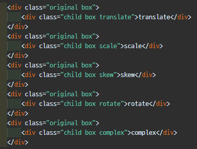

트랜스폼(Transform)은 요소에 이동(translate), 회전(rotate), 확대축소(scale), 비틀기(skew) 효과를 부여하기 위한 함수를 제공한다.
단 애니메이션 효과를 제공하지는 않기 때문에 정의된 프로퍼티가 바로 적용되어 화면에 표시된다.
트랜스폼은 애니메이션 효과를 위해 사용하여야 하는 것은 아니지만 애니메이션 효과를 부여할 필요가 있다면 트랜지션이나 애니메이션과 함께 사용한다.
| 트랜스폼 함수 | 설명 | 단위 |
|---|---|---|
| translate(x,y) | 요소의 위치를 X축으로 x만큼, Y축으로 y만큼 이동시킨다. | px, %, em 등 |
| translateX(n) | 요소의 위치를 X축으로 x만큼 이동시킨다. | px, %, em 등 |
| translateY(n) | 요소의 위치를 Y축으로 y만큼 이동시킨다. | px, %, em 등 |
| scale(x,y) | 요소의 크기를 X축으로 x배, Y축으로 y배 확대 또는 축소 시킨다. | 0과 양수 |
| scaleX(n) | 요소의 크기를 X축으로 x배 확대 또는 축소 시킨다. | 0과 양수 |
| scaleY(n) | 요소의 크기를 Y축으로 y배 확대 또는 축소 시킨다. | 0과 양수 |
| skew(x-angle,y-angle) | 요소를 X축으로 x 각도만큼, Y축으로 y 각도만큼 기울인다. | +/- 각도(deg) |
| skewX(x-angle) | 요소를 X축으로 x 각도만큼 기울인다. | +/- 각도(deg) |
| skewY(y-angle) | 요소를 Y축으로 y 각도만큼 기울인다. | +/- 각도(deg) |
| rotate(angle) | 요소를 angle만큼 회전시킨다. | +/- 각도(deg) |
| 트랜스폼 함수 | 설명 | 단위 |
|---|---|---|
| translate3d(x,y,z) | 요소의 위치를 X축으로 x만큼, Y축으로 y만큼 Z축으로 z만큼 이동시킨다. | px, %, em 등 |
| translateX(n) | 요소의 위치를 X축으로 x만큼 이동시킨다. | px, %, em 등 |
| translateY(n) | 요소의 위치를 Y축으로 y만큼 이동시킨다. | px, %, em 등 |
| translateZ(n) | 요소의 위치를 Z축으로 z만큼 이동시킨다. | px, %, em 등 |
| scale3d(x,y) | 요소의 크기를 X축으로 x배, Y축으로 y배, Z축으로 z배 확대 또는 축소 시킨다. | 0과 양수 |
| scaleX(n) | 요소의 크기를 X축으로 x배 확대 또는 축소 시킨다. | 0과 양수 |
| scaleY(n) | 요소의 크기를 Y축으로 y배 확대 또는 축소 시킨다. | 0과 양수 |
| scaleZ(n) | 요소의 크기를 Z축으로 z배 확대 또는 축소 시킨다. | 0과 양수 |
| rotate3d(x,y,z) | 요소를 X축으로 x각도, Y축으로 y각도, Z축으로 z각도 회전시킨다. | +/- 각도(deg) |
| rotateX(x) | 요소를 X축으로 x각도 회전시킨다. | +/- 각도(deg) |
| rotateY(y) | 요소를 Y축으로 y각도 회전시킨다. | +/- 각도(deg) |
| rotateZ(z) | 요소를 Z축으로 z각도 회전시킨다. | +/- 각도(deg) |
: 변환함수를 프로퍼티값으로 쉼표없이 나열한다.
나열순서에 따라 차례대로 효과가 적용된다.
CSS
transform: func1 func2 func3 ...;
스타일 시트 참고
HTML

요소의 기본기준점을 설정할 때 사용된다.
기본기준점은 요소의 정중앙이다(50%,50%).
설정값으로 %, px, top left, bottom right을 사용할 수 있다.
0, 0은 top left / 100% 100%는 bottom right과 같은 값이다.